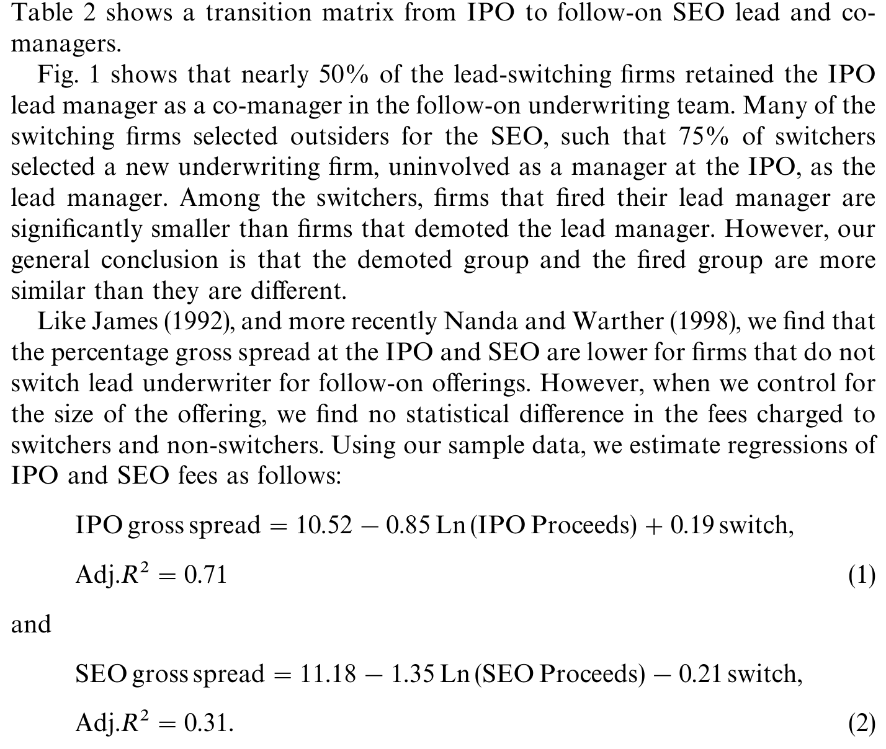
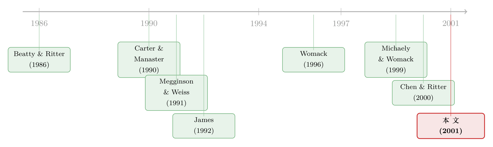

客户为什么「跳槽」？——新股上市三年后，三成公司换掉了它的投行
本文读的是 Krigman, Shaw & Womack (2001, Journal of Financial Economics)：1993–1995 年间，将近三分之一（180/572）在 IPO 后三年内增发的公司，换掉了它们的主承销商。可出人意料的是，「换人」的那批公司当年的新股抑价反而更低，几乎找不到「因为投行办砸了 IPO 才分手」的证据。真正的两条动机是——向上「毕业」到更有声望的投行，以及去新投行那里买一份更好、更有分量的分析师研究覆盖。
1 一个反常识的分手
先说一个数字：在 1993 到 1995 年间，有 578 家公司在 IPO 之后三年内回到资本市场做了一次增发（seasoned equity offering, SEO），它们为此一共向投行付出了将近 20 亿美元的费用。而其中 180 家——几乎整整三分之一——为这第二笔生意换掉了 IPO 时的主承销商（lead underwriter）。作者甚至替我们算了一笔账：被这些「跳槽」抢到手的承销份额，光毛价差（gross spread）就大约值 4.63 亿美元。
客户忠诚度，正如华尔街自己感叹的那样，早已不复当年。问题是：为什么？
如果你读过此前那一小撮关于承销商声誉的文献，你大概会脱口而出一个答案：因为投行把 IPO 办砸了。Beatty and Ritter (1986) 说过，定价失误的投行会在日后丢掉市场份额；Dunbar (2000) 也发现，把新股抑价（underpricing）抬得最高、给投资者送上最大「首日红包」的投行，会随时间流失 IPO 份额。顺着这个逻辑，「换承销商」就应该是一种惩罚：你当初把我的股票贱卖了、把太多钱留在了桌上（money left on the table），所以这次增发我不找你了。
这是一个干净、符合直觉、也符合既有理论的故事。本文最迷人的地方在于——它几乎被数据全盘推翻了。
2 数据：把「跳槽」和「留任」摆在一起称重
作者的样本拼接自好几个数据库。公司名单来自 SDC New Issues Database：1993 年 1 月到 1995 年 12 月间共有 2,049 起 IPO，其中 578（28%）在三年（作者把一年定义为 252 个交易日，三年即 756 个交易日）内做了增发。剔除 6 家在增发前主承销商已经倒闭/退出的公司后，最终样本是 572 家「IPO + SEO」组合，其中 180 家换了主承销商。
为了量化「投行到底做得好不好」，作者把好几把尺子放到了一起：
- 用
TAQ（纽交所成交与报价库）算出每家公司的抑价（从发行价到开盘首笔成交的回报）和首日「抛单」（flipping）水平； - 用
I/B/E/S看每家公司在 IPO 后拿到了多少、多及时的分析师盈利预测——572 家里有 520 家（91%）有研究覆盖，而 IPO 主承销商只为其中 438 家提供了预测； - 用《机构投资者》(Institutional Investor) 杂志的「全美研究团队」（All-America Research Team）排名，把那些挤进 1992–1996 年第一、二、三梯队的分析师定义为「全明星」（all-star）；
- 用 Carter-Manaster（0–9，9 多为顶级投行）和 Megginson-Weiss（按市场份额）两套声誉评分，给每家投行打分。
把「换人组」（switchers, 180 家）和「留任组」（non-switchers, 392 家）并排一比，几个差异立刻跳了出来。换人的公司在 IPO 时明显更小：平均募资 $38.8 百万 vs. 留任组的 $77.6 百万（t = 6.26）；它们也等得更久才回来增发，从 IPO 到 SEO 的中位间隔是 556.5 个日历日，而留任组只有 320.5 天（t = −7.44）。

Table 2: shows a transition matrix from IPO to follow-on SEO lead and co-
那张转移矩阵（如表 2 所示）还告诉我们一件容易被忽略的事：「换主承销商」并不等于「把原来的投行扫地出门」。在 180 家换人的公司里，有 88 家把 IPO 主承销商降级成了增发时的副承销商（co-manager），另有 92 家则让它彻底出局；同时，差不多一半的换人公司仍把 IPO 主承销商留在了承销团里。所谓「跳槽」，更多是一次座次的重排，而非一场决裂。
3 反转：被「贱卖」的，恰恰是没换人的那一批
好，现在到了真正关键的一步。
如果「换人 = 惩罚业绩差的投行」成立，那换人组的 IPO 就应该被抑价得更狠——毕竟那才是「把钱留在桌上」的罪证。可数据给出的是一个几乎完全相反的符号：留任组的新股反而被抑价得更多，换人组的 IPO 抑价显著更低。换句话说，那些当年被投行「贱卖」、首日大涨的公司，下一次反而更愿意继续用同一家投行。
这就把「业绩惩罚假说」（也就是作者列出的 Hypothesis 1：IPO 抑价过度会导致换人）逼到了墙角。同样地，Hypothesis 2 关于「配售失败/抛单过多」、Hypothesis 3 关于「做市不力」的故事，在数据里也都没能站住脚。
那换人的公司到底在不满什么？线索藏在另一个数字里：换人组在 IPO 时实际募到的钱，往往低于发行区间中点（mid-point of the filing range）的预期，而留任组则显著高于中点。也就是说，换人的公司不是被「贱卖」，而是被「卖冷了」——市场需求没有被充分点燃。再叠加前面那个「IPO 后只有 438/520 家拿到了原投行的研究覆盖」的事实，一条新的线索浮出水面：让公司不满的，不是 IPO 当天那几个小时的定价，而是上市之后那条漫长的「售后服务」线——尤其是研究覆盖。
（关于「把钱留在桌上为什么没让发行人翻脸」这个老问题，可参见《151 万、不，1.51 亿美元留在桌上，他为什么还笑得出来？》。）
4 两条真正的动机：向上「毕业」，与买一份研究
作者把发行人选承销商的考量拆成了有形（tangible）与无形（intangible）两类：有形的是可以度量的具体任务——定价、配售、做市、研究覆盖；无形的则是声誉与对「质量」的感知。本文一共提出五个假设（H1–H5），前四个都关于有形服务，最后一个 H5 才是那个无形的、却最有解释力的——
Hypothesis 5: The graduation effect. 当公司有机会请到一家声誉更高的投行来做增发时，它倾向于「升级」过去。
这就是所谓的「毕业效应」（graduation effect）。证据相当直接：换人组在 IPO 时的 Carter-Manaster 评分平均只有 7.49，到了增发时跳升到 8.14；Megginson-Weiss 评分也从 2.94 升到 3.44。它们不是在惩罚谁，而是在向上够——当年小公司只配得上中游投行，长大之后就想攀一家更体面的。更何况，在 Chen and Ritter (2000) 记录的「七个点」世界里，请更好的投行几乎不用多花钱：费用大多被钉死在 7%。
「毕业」之所以可能，前提之一正是费用并不构成障碍。作者的两条费用回归说明了这一点——一旦控制了发行规模，换人与否对毛价差几乎没有影响：
$$IPO\ gross\ spread = 10.52 - 0.85\,Ln(IPO\ Proceeds) + 0.19\,switch,\quad Adj.\ R^2 = 0.71$$
$$SEO\ gross\ spread = 11.18 - 1.35\,Ln(SEO\ Proceeds) - 0.21\,switch,\quad Adj.\ R^2 = 0.31$$
switch 这个虚拟变量的系数（+0.19 与 −0.21）又小又不稳，方向还相反。难怪在问卷里，「费用结构」在所有选投行的标准中排名垫底——投行不靠降价抢客户，因为价格根本不是发行人最在意的东西。（关于这个「七个点」之谜，可参见《7% 这把「固定的尺子」，竟能改写新股的价格》。）
但真正让这篇论文与众不同的，是第二条动机。作者没有止步于「市场数据」，而是干脆去问了当事人——给那些换过承销商的公司 CFO 和 CEO 寄问卷、打电话，直接问他们：你们当初为什么换？
答案令人意外地一致。三分之二的高管表示，他们对 IPO 投行的工作「相当满意」甚至「非常满意」；只有约 15% 把「对原 IPO 某个环节不满」列为换人的首要原因。换句话说，绝大多数分手并非出于愤怒。而当问到「那你图什么」时，研究覆盖（research coverage）压倒性地胜出：44% 的高管把「更多或更好的研究覆盖」列为换人的头号理由，88% 把它列进前三。
于是整个故事闭合了：公司换投行，一半是为了「升舱」到更高声誉的招牌，一半是为了买到更多、更有分量的卖方研究——尤其是那些能上「全明星」榜的分析师。Womack (1996) 和 Michaely and Womack (1999) 早就指出，主承销商的分析师会在上市后第一年频繁地推荐自家带上市的公司，这些「打气针」（booster shots）能暂时抬高股价、扩大投资者关注。对一家急于在二级市场维持热度的成长型公司而言，这恰恰是它最稀缺、也最舍得花钱去买的东西。
（这条「分析师彩虹屁」的暗线，本博客另有两篇可参看：《为什么「贵」的承销方式反而赢了？》 与 《上市之后，分析师的「彩虹屁」到底值不值钱？》。）
5 文献脉络
把这篇论文放回它所在的研究河流里，会看得更清楚。
最早的一支，是给「承销商声誉」找一把可度量的尺子：Carter and Manaster (1990) 用「谁的名字排在招股说明书 (tombstone) 的什么位置」造出了投行的座次表，Megginson and Weiss (1991) 则干脆把声誉等同于市场份额。与此并行的另一支，是把声誉和定价行为联系起来：Beatty and Ritter (1986) 发现定价失误会带来未来份额损失，Michaely and Shaw (1994) 发现资本更雄厚（推断为质量更高）的投行抑价更少，Booth and Smith (1986) 提出了著名的「认证假说」（certification hypothesis）——投行的核心角色是为发行价的合理性背书。

接着，一个自然的问题是：公司究竟会不会、以及为什么换投行？James (1992) 用「关系专用性资产」（relationship-specific assets）给出了第一个理论框架——IPO 与增发间隔越久，公司专用信息越贬值，越可能换人。Nanda and Warther (1998) 则发现忠诚正随时间消退。然后，研究的重心慢慢从「定价」移向了「上市后的服务」：Womack (1996)、Michaely and Womack (1999) 把卖方研究推到台前，Chen and Ritter (2000) 用「七个点」拆穿了费用竞争的缺席。
本文（Krigman, Shaw and Womack, 2001）正站在这两股潮流的汇合处：它一边用 IPO 后的市场数据逐一检验「业绩惩罚」假说并予以否定，一边用一手问卷把「毕业效应」和「买研究」这两条无形动机摆到了明面上。它和作者自己更早的 Krigman, Shaw and Womack (1999)（关于抛单的预测力）一脉相承，却把镜头从「投资者行为」转向了「发行人选择」。
6 评论与延伸（Q&A + 研究方向）
(a) 几个可能的疑问
Q：「换人组抑价更低」这个反转，会不会只是规模或选择偏误造成的假象？
有这个风险。换人组本就更小、等待更久、需求更冷（募资低于发行区间中点）。规模、市场时机与抑价高度纠缠，单变量的均值比较很难分清因果。作者用了问卷来交叉印证（高管自陈「满意」且把研究列为首因），这在一定程度上缓解了纯统计上的内生性担忧，但「为什么偏偏是小而冷的公司更想换」本身仍是一个未被结构化识别的问题。
Q：问卷会不会有「事后合理化」的偏差——高管不愿承认「当初被投行坑了」？
完全可能，这也是田野问卷的通病。说自己「换人是为了升级和买研究」，比承认「我被贱卖了、配售搞砸了」要体面得多。不过有意思的是，市场数据（抑价更低、声誉评分上移）与问卷答案方向一致，两条独立证据互相印证，削弱了「纯粹是面子话」的解释力。
Q：「换人不等于开除」——既然一半公司还把原投行留作副承销商，这还算「分手」吗？
算，但要重新理解「分手」。作者区分了「降级」（demote，88 家）和「出局」（92 家），并发现把原投行彻底踢出的公司，规模显著更小。整体看，降级组和出局组「相似多于相异」。这说明换人主要是主承销席位的重排——谁来牵头、谁来主导研究和配售——而不一定是关系的终结。
Q：「毕业效应」会不会其实就是「均值回归」？小公司长大了，自然够得上更好的投行。
这正是它的机制，而非反驳。毕业效应说的就是：声誉是一种公司愿意为之付费（且在 7% 世界里几乎免费）的无形品，一旦自身体量与质量提升、够得着更高招牌，就会去够。它与「惩罚业绩」的区别在于动机的符号——前者是「向上拉力」，后者是「向下推力」，而数据支持的是前者。
Q：研究覆盖真的值钱吗，还是只是高管的一厢情愿？
论文本身（结合 Michaely and Womack, 1999）的证据是：主承销商分析师的推荐确实能暂时抬高股价、扩大关注，所以对急于维持二级市场热度的成长公司而言，它有真实的、可货币化的价值。但「全明星分析师的覆盖能带来多少长期价值」这个更硬的问题，作者坦承学界尚未给出令人信服的答案。
Q：这套 1993–1995 的结论，在今天（投行研究与承销之间被监管隔离之后）还成立吗？
这是最值得追问的一点。2003 年的「全球和解」（Global Settlement）和 Reg AC 之后，「用研究换承销」的链条被显著削弱。本文记录的恰恰是那条链条最旺盛的年代，因此它更像一份关于「监管隔离前」生态的历史快照——这也正是后续研究最好的对照基准。
(b) 几个可能的研究问题与提案
1. 把「毕业效应」搬到公司债承销市场。 【经济故事】股票世界里公司向上「毕业」到更高声誉投行的逻辑，在债券初次发行（debt IPO）市场是否同样成立？发债企业会不会随着信用评级改善、规模扩大，从中游承销商升级到 bulge-bracket？而债券承销看重的「售后服务」是做市/流动性支持，而非分析师覆盖。 【可行性】高。Mergent FISD + TRACE 可同时观测承销商身份与上市后做市/流动性；识别上可借鉴本文的「IPO→SEO」配对，做「首发→后续发行」的承销商转移矩阵。
2. 用 2003 年「全球和解」做一次自然实验。 【经济故事】如果「买研究」真是换承销商的核心动机，那么当监管强行切断研究与承销的利益链之后，「换人率」与「换人动机」应当系统性改变——研究的权重下降，毕业效应或做市能力的权重上升。 【可行性】中。需要把本文样本延伸到 2003 年前后，构造换人率的时间序列并做断点/DiD；难点在于同期还有 Reg FD、互联网泡沫破裂等混淆事件，需要小心剥离。
3. 外资发行人 / 跨境上市中的「承销商毕业」。 【经济故事】当一家非美公司先在本土上市、再到美国做后续发行（或反向），它是否会「毕业」到全球性投行，且动机是买「全球研究覆盖」而非本土覆盖？这把毕业效应与跨境上市的「绑定假说」连了起来。 【可行性】中。SDC 跨境发行数据可得，I/B/E/S 有全球分析师覆盖；难点是各国披露口径不一、样本在单一年份偏薄。
4. 「全明星分析师」覆盖与上市后流动性的因果。 【经济故事】本文把「买全明星覆盖」当作换人动机，但覆盖→流动性的因果尚未被干净识别。能否用分析师跳槽、券商合并等外生冲击，估计「获得一名全明星覆盖」对个股买卖价差与换手的真实影响？ 【可行性】中到高。Institutional Investor 榜单 + TAQ/日内数据齐备；识别靠分析师层面的外生变动（离职、所在券商被并购）。
参考文献
- Beatty, R. P., Ritter, J. R. (1986). Investment banking, reputation, and the underpricing of initial public offerings. Journal of Financial Economics 15, 213–232.
- Booth, J. R., Smith II, R. L. (1986). Capital raising, underwriting, and the certification hypothesis. Journal of Financial Economics 15, 261–281.
- Carter, R. B., Manaster, S. (1990). Initial public offerings and underwriter reputation. Journal of Finance 45, 1045–1067.
- Carter, R. B., Dark, F. H., Singh, A. K. (1998). Underwriter reputation, initial returns, and the long-run performance of IPO stocks. Journal of Finance 53, 285–311.
- Chen, H., Ritter, J. (2000). The seven percent solution. Journal of Finance 55, 1105–1131.
- Dunbar, C. G. (2000). Factors affecting investment bank initial public offering market share. Journal of Financial Economics 55, 3–41.
- James, C. (1992). Relationship-specific assets and the pricing of underwriter services. Journal of Finance 47, 1865–1885.
- Krigman, L., Shaw, W. H., Womack, K. L. (1999). The persistence of IPO mispricing and the predictive power of flipping. Journal of Finance 54, 1015–1044.
- Krigman, L., Shaw, W. H., Womack, K. L. (2001). Why do firms switch underwriters? Journal of Financial Economics 60, 245–284.
- Megginson, W. L., Weiss, K. A. (1991). Venture capital certification in initial public offerings. Journal of Finance 46, 879–903.
- Michaely, R., Shaw, W. H. (1994). The pricing of initial public offerings: Tests of adverse-selection and signaling theories. Review of Financial Studies 7, 279–319.
- Michaely, R., Womack, K. L. (1999). Conflict of interest and the credibility of underwriter analyst recommendations. Review of Financial Studies 12, 653–686.
- Nanda, V., Warther, V. A. (1998). The price of loyalty: An empirical analysis of underwriter relationships and fees. Unpublished Working Paper, University of Chicago.
- Womack, K. L. (1996). Do brokerage analysts' recommendations have investment value? Journal of Finance 51, 137–167.